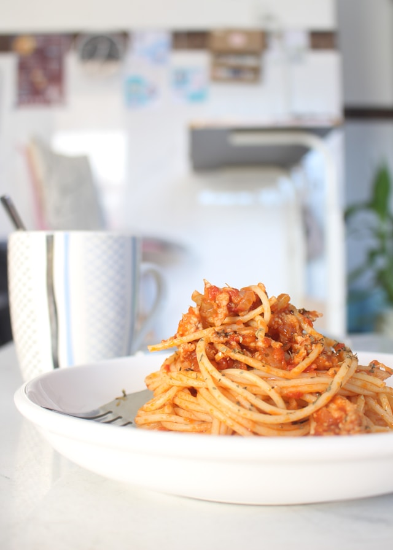

Spaghetti

Description:
Comforting baked spaghetti with plenty of melted cheese. This is the perfect dish for potlucks, family gatherings, or a weeknight dinner.
Ingredients
- Spaghetti noodles
- Cream cheese and sour cream
- Shredded mozzarella and parmesan cheese
- Ground beef mince
- Onion
- Pasta sauce
- Seasonings
Steps
- Boil the spaghetti and drain when cooked.
- Cook beef until lightly browned, then add onion and seasonings.
- Continue cooking until meat is cooked fully.
- Add the pasta sauce, spaghetti, and beef mixture together in a casserole dish. Stir until everything is coated in sauce.
- Cover in kitchen foil and bake for 30 minutes
- Remove the foil, sprinle with parmesan and cook until the cheese is golden brown.